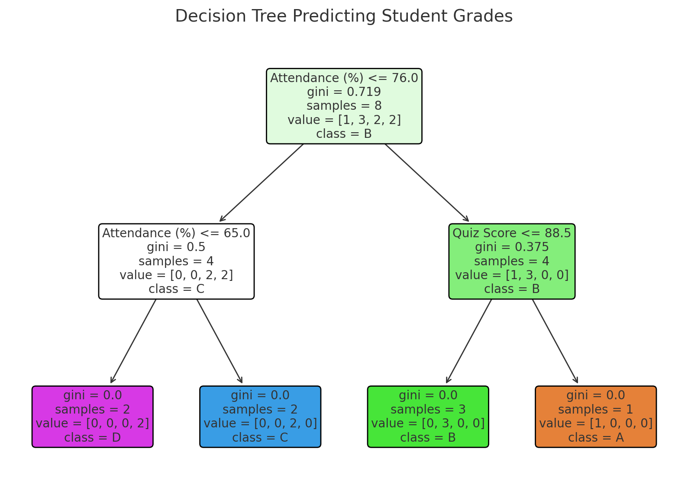

2 AI, Explainable AI and Evaluative AI: Informed Data-Driven Decision-Making in Education
1 Introduction
AI has a long and rich history in education. In fact, artificial intelligence in education predates several other technologies and disciplines e.g., online learning. Among the first examples of artificial intelligence applications in education is the creation of the PLATO system at the University of Illinois around the 1960s which allowed for interactive learning and automated feedback [1]. While PLATO was limited in scope, it laid the foundation for future developments to follow and encouraged other researchers to explore the nascent technology in education. Most importantly, interest started to grow in developing intelligent tutoring systems (ITS) and AI powered educational solutions [1].
However, it was not until the early 1980s when the field of artificial intelligence in education saw its major milestone with the launch of the first International Conference on Artificial Intelligence in Education (AIED) which was held in Montreal [2]. AIED conference brought together researchers from both AI and educational psychology, marking the formal recognition of AI as a significant discipline. Furthermore, AIED set the stage for collaboration between the fields of AI and education, which led to several significant developments in intelligent tutoring systems, adaptive learning technologies, and educational software [3].
The last two decades have witnessed several remarkable and fast paced developments in the field of AIED fueled by the rapid adoption of the internet, the increase in computation power and advances in methodology [4]. Such advances led to the birth of learning analytics as a field —along with educational data mining— which all contributed to wide use of machine learning and data analytics, alongside other uses of AIED that extends to almost all fields of research and practice [5].
As AI continues to play an increasingly central role in education, concerns around transparency, and fairness have become more prominent [6]. These issues stem from the inherently complex and often opaque nature of AI systems, particularly those powered by machine learning and deep learning [7]. For instance, while AI-driven systems can offer personalized recommendations and adaptive learning experiences, their underlying decision-making processes are not always clear to educators or learners. This lack of transparency can prevent users from trusting AI systems and hinder their adoption in educational contexts [8]. Worse even, they might follow AI decisions without knowing if they are wrong or right [9].
One of the reasons for the mistrust in AI is that its performance is commonly affected by bias, as AI models are only as unbiased as the data they are trained on [6]. Historical inequities or imbalances in training datasets can perpetuate and even amplify existing disparities, leading to outcomes that disproportionately disadvantage certain groups of students [10]. For example, adaptive systems might inadvertently favor learners whose behavior aligns with the dominant patterns in the training data, leaving those with less conventional learning trajectories underserved. Such risks highlight the importance of rigorous evaluation, diverse datasets, and ethical oversight in the design and deployment of AI systems in education.
Addressing these challenges requires the integration of explainable AI (XAI) techniques, which aim to make AI outputs interpretable and accountable to users. XAI tools can provide insights into how AI systems reach their conclusions, enabling educators to critically evaluate and trust these technologies [11]. Moreover, the adoption of fairness-aware machine learning practices and inclusive design principles can help mitigate biases, ensuring that AI-driven solutions support equitable outcomes for all learners. These considerations are particularly relevant when it comes to personalized education, where the promise of tailored interventions must be balanced with a commitment to fairness and transparency.
This chapter explores the current state of artificial intelligence in education, as well as explainable AI (XAI). AI and XAI techniques and tools are illustrated in the subsequent tutorials in the book and this chapter provides an introduction for the reader to have an overarching view on their main characteristics and potential. We further introduce the concept of evaluative AI [12], which aims to address some of the limitations of XAI.
2 An overview of AI applications in education
AI is an extremely broad field that permeates many disciplines, encompassing a wide range of techniques and applications that aim to replicate or enhance human intelligence. In spite of —or maybe because of— its widespread influence across fields such as healthcare, finance and, of course, education, there is no universally agreed-upon definition of AI [13], nor a standardized taxonomy to categorize its many methods and applications. In the context of education, this lack of clarity is furthered by the diverse range of technologies that fall —sometimes wrongly— under the label of AI —from rule-based systems to complex neural networks— each serving diverse purposes such as personalization, prediction, and automation. In this section, we aim to provide an overview of the key AI applications that have influenced education, presenting relevant use cases in the field. We follow the structure of the recent meta-review by Bond et al. [14], which is based on the original typology by [15], and add an additional section on AI in education research.
2.1 Adaptive systems and personalization
One of the main promises of AI in education is personalization. Personalized learning focuses on tailoring educational experiences to individual learners’ needs, preferences, and readiness, and it can be implemented through various methods and technologies [16]. For example, adaptive systems implement personalized learning by constructing a model of each learner using artificial intelligence and machine learning as well as continuous data collection of students’ activities and performance [16]. According to Zhong [17], personalized learning has been mainly implemented through learning content structuring and sequencing (organizing and ordering learning materials according to individual needs) as well as readiness support (adapting to students’ performance).
Another form of personalization —closely related to adaptive systems— is the use of recommender systems. Recommender systems are algorithms designed to suggest learning resources, activities, or courses to students based on their individual profiles, past performance, and expressed preferences. According to the review by Urdaneta-Ponte et al. [18], most recommender systems in the education literature use collaborative filtering, which entails recommending resources based on similarity to other students.
In recent years, personalization has expanded beyond adaptivity and recommendation through the provision of truly personalized learning experiences, made possible thanks to the latest AI breakthroughs. Chatbots and virtual assistants currently represent one of the most prominent applications of personalization of education using AI. These tools take advantage of the advances in natural language processing —and most recently Large language Models (LLMs)— to interact with students in a conversational manner. A recent review by Labadze et al. [19] discovered that students benefit most from AI-powered chatbots in three main areas: support with homework and studying, personalized learning experiences, and skill development [20].
Other AI-powered technologies like facial recognition or mood detection are emerging as relevant tools for tailoring educational experiences [21]. These technologies can complement traditional adaptive systems through the incorporation of real-time emotional and behavioral information on students’ facial expressions, tone of voice, and body language. Despite their potential, these technologies raise concerns regarding privacy, consent, and data security [22]. Furthermore, the accuracy of emotion recognition algorithms and the potential for cultural or individual biases remain critical challenges to address.
2.2 Intelligent tutoring systems ITS)
Closely related to adaptive systems are Intelligent Tutoring Systems (ITSs). ITSs use AI techniques to provide personalized tutoring based on a model of the learner’s knowledge, behavior, and learning progress [23]. ITSs aim to emulate one-on-one human tutoring through the adaptation of instructional strategies, delivering tailored feedback, and offering customized learning experiences to help students achieve specific educational goals. ITSs often include features such as error diagnosis, hint generation, and real-time adaptation to individual learner needs, typically in well-defined domains. For example, virtual patients are a form of ITS used in healthcare to practice clinical reasoning [24]. ITSs are also extensively used in programming education as a step-by-step tutor to master a programming language [25].
2.3 Profiling and prediction
Predictive modeling has been a primary focus of AI in education. Early attempts dealt with the use of demographic and administrative data from learners to predict performance and dropouts [26]. With the birth of the educational data mining and learning analytics fields, utilizing intensive log data about learners’ online activities became the norm in the field, which came accompanied to increased predictive accuracy thanks to advances in ML algorithms [27].
The goals of performing predictive modeling have been diverse. A central goal has been the early identification of students who may be at risk of failing or dropping out [28]. Based on data from previous iterations of a course, researchers attempt to predict students’ performance early on in the current course to be able to conduct remedial interventions. Other less frequent goals of predictive modeling are related to career placement [29], admission [15], or student satisfaction [27].
Research suggests that predictive modeling is hardly generalizable and lacks portability between courses [30], or even between course iterations [31]. Thus, recent research has shifted the focus from predicting performance to understanding learners based on their behavioral data. Clustering algorithms have been operationalized to detect distinct patterns or profiles of engagement [32], collaboration roles [33], self-regulated learning [34], or learning strategies [35].
Lastly, recent research strands that are gathering increased attention focus on identifying and mitigating biases in AI algorithms [36], ensuring equitable treatment of all learners, and enhancing the interpretability of AI systems through eXplainable Artificial Intelligence (XAI) [11].
2.4 Assessment and evaluation
Students often long for formative feedback that offers actionable points to improve their learning and performance. This has traditionally come at the expense of overburdening teachers with a higher workload. AI offers a lot of promise to alleviate this challenge by providing automated, personalized feedback to students [37]. Although automated assessment has been present for decades, e.g., through multiple-choice questionnaires that can be automatically graded or autograders for programming assignments, advancements in artificial intelligence, particularly in NLP, have led to the development of systems capable of analyzing student work and generating constructive feedback.
AI assessment and feedback have been especially relevant in the evaluation of artifacts that do not have a deterministic correct solution. In fact, the most widely used application of AI-powered feedback in education is automated essay scoring [38]. Another important focus has been the evaluation of programming code. Although non-AI automated assessment tools have existed for decades [39], the recent advances in AI have allowed the provision of more relevant and detailed feedback to students [40]. The main advantage of AI-powered assessment systems is that they can provide immediate feedback, allowing students to understand their mistakes and learn from them in real-time. In addition, such systems enable educators to support a larger number of students without a proportional increase in workload, making personalized education more accessible.
Beyond evaluating students’ assignments and artifacts, AI has also opened new avenues for evaluating students’ learning process. For instance, automated discourse coding allows educators and researchers to analyze conversations or discussion forums in order to identify patterns of collaboration, critical thinking, and engagement [41].
2.5 AI in Education Research and Learning Analytics
Lastly, AI has not only brought opportunities to education practice but also to education research and learning analytics. Advances in AI, such as deep learning, natural language processing (NLP), and more recently, LLMs, have significantly expanded the possibilities for analyzing unstructured data such as text, speech, and video, and facilitating new approaches to personalization and feedback in education [42, 43].
Moreover, the increasing role of AI as an educational tool has further expanded the possibilities of education and learning analytics researchers for understanding learners’ behaviors in the presence of these new learning technologies [44]. For example, researchers can examine the types of prompts students pose to AI systems, providing fine-grained information about common misconceptions, knowledge gaps, or areas where additional support may be needed. These analyses can also showcase how students respond to feedback or recommendations generated by AI, and hence whether AI’s guidance promotes better learning outcomes or contributes to over-reliance on AI-generated solutions [45].
3 Explainable AI
Headlines around the globe are increasingly spotlighting instances of AI bias, from skewed hiring algorithms [46] to discriminatory facial recognition systems [47], exposing the urgent need to address the unintended consequences of AI in our daily lives. These incidents highlight not only the limitations of AI but also the opaque nature of many of these systems, which makes identifying and mitigating bias a significant challenge. Explainable AI (XAI) emerges as a promising solution to shed light on the ‘black box’ of AI decision-making. In a nutshell, XAI can be defined as a set of methods and tools that enables humans to understand the outcomes of AI models [48]. Making the processes behind AI decisions transparent and interpretable through XAI allows all involved stakeholders—developers, users, and policymakers —to detect bias and assess fairness, and hence build trust in AI systems [49]. XAI aims to answer questions such as: why did the AI make this particular decision?; how would changes in the input data influence the decision?, and in what changes are needed in AI’s behavior to align with ethical and societal values? This is achieved through techniques such as feature importance rankings, model-agnostic interpretability methods, and visualization tools that reveal the relationships between inputs and outputs [50].
As we have seen in the previous section, the adoption of AI tools and systems in the field of education has opened new opportunities for personalized learning, automated assessments, and early intervention for at-risk students [4]. However, as these systems increasingly influence critical decisions—such as grading, admissions, and resource allocation—they also bring the risk of embedding and perpetuating biases present in training data or algorithms. As such, XAI is of particular relevance in education, where fairness, transparency, and trust should be the basis of an equitable learning environment [11]. For instance, XAI techniques can reveal which factors are most influential in predicting a student’s performance [51], enabling interventions that are data-informed yet account for individual differences. Similarly, transparency in automated grading systems ensures that assessments are objective [52], and therefore they can be trusted by students and educators. Moreover, XAI can provide students with actionable feedback that is both personalized and understandable [53], helping them detect areas for improvement.
In the remainder of this section, we provide an overview of the main concepts, techniques, and tools associated with XAI. We describe the main AI methodologies, including model-agnostic interpretability, feature importance analysis, and counterfactual reasoning, with an emphasis on how they enable transparency and accountability in AI systems.
3.1 The trade-off between explainability and performance
We start our journey into XAI by talking about explainability. We must differentiate between two broad categories of AI models: intrinsically explainable algorithms and black-box models. This distinction is critical for contextualizing the need for explainability tools and techniques discussed in later sections.
3.1.1 Intrinsically Explainable Algorithms
Intrinsically explainable (or white-box) algorithms are designed to be interpretable by their very nature [49]. These algorithms have transparent structures and straightforward mechanisms for decision-making, making it easy to understand how input features contribute to output predictions. Examples include linear regression, logistic regression, decision trees, and rule-based systems [54]. Stakeholders can directly observe relationships, such as the weight of a variable in a regression model (Figure 2.1 (a)) or the sequence of decisions in a tree structure (Figure 2.1 (b)).


In education, intrinsically explainable algorithms are particularly valuable when transparency is a priority. For instance, a linear or logistic regression model predicting a student’s grade based on attendance and participation provides a clear and intuitive explanation for its outcomes. Educators and other stakeholders can readily interpret the model and take actionable steps, such as encouraging students to engage in self-assessment activities.
However, intrinsically explainable models often come with limitations. Their simplicity can result in lower predictive accuracy when dealing with complex, non-linear relationships or high-dimensional data [54], which are common in educational contexts and a common problem in learning analytics research and practice. As a result, their applicability is sometimes constrained when achieving high accuracy is critical.
3.1.2 Black-Box Models
Black-box models, such as deep neural networks, gradient boosting machines, and ensemble methods [54], are characterized by their complex internal structures, which are not inherently interpretable. These models are often chosen for their ability to capture highly complex patterns and relationships in data, hence yielding higher predictive performance in many applications [49]. However, their complexity creates a significant barrier to understanding how decisions are made.
In education, black-box models might be needed when dealing with more complex unstructured data such as students’ free-form text or images [26]. Although these models may achieve higher accuracy than intrinsically explainable algorithms, their opacity raises concerns. Without insights into how predictions are generated, educators and administrators may struggle to trust or act on these outputs, especially when high-stakes decisions that could be consequential for students are involved.
3.1.3 Balancing Explainability and Predictive Power
The choice between intrinsically explainable algorithms and black-box models often involves a trade-off between interpretability and performance [54]. Simpler models provide clarity and ease of use, at the expense of failing to capture the complexity of educational data. On the other hand, black-box models excel in handling such complexity but require additional methods to make their decisions interpretable [50]. XAI aims to bridge this gap by providing explainability techniques for black-box models. These tools enable stakeholders to take advantage of the high performance of black box models while maintaining transparency and accountability such as in the case of white-box models. For example, black-box models predicting student dropout can be paired with interpretability methods to reveal the main factors driving each prediction, hence allowing educators to make informed, data-driven decisions.
3.2 Global vs. Local Explainability: XAI tools
As we have seen in the previous section, we need XAI tools to be able to explain the outcomes of black-box AI models. We can approach explainability from two complementary perspectives: global and local. Both play a crucial role in understanding and effectively applying AI systems, since both macro-level patterns and individual-level insights are essential for achieving trust and fairness. In this section, we describe each of these perspectives and the XAI tools used in each of them.
3.2.1 Global Explainability
Global explainability focuses on understanding the overall behavior of a model. It provides insights into how the model makes decisions across the entire dataset, pointing to the features that are most influential and the patterns that drive predictions. For instance, in a model designed to predict student performance (such as the ones shown in Figure 1) global explainability might reveal that the average quiz score, attendance, and assignment submission are consistently the most important factors that predict performance. This “big picture” explanation enables educators and administrators to evaluate the model’s logic and ensure it aligns with their expectations. Moreover, global explainability is instrumental in assessing whether the model behaves fairly across different demographic groups, helping to identify and address potential biases. However, its high-level nature means that it cannot explain why specific predictions are made, which limits its usefulness in scenarios requiring personalized action. It is, though, useful to take general actions that would benefit “the majority”, for example changing the course design or learning materials. Chapter 6 [55] in this book offers a tutorial on global explainability using the R programming language. Below, we overview the main techniques for global explainability
3.2.1.1 Variable/Feature Importance
Feature importance measures how much each input variable contributes to a model’s predictions, helping to identify the most influential factors driving its decisions [56]. In educational applications, feature importance provides actionable insights into what matters most for student outcomes. For example, a model predicting grades (see Figure 4.4) might show that the frequency of forum contributions is the most important factor. This insight helps educators prioritize interventions where they are most needed, such as encouraging participation .

In models like decision trees or random forests, feature importance is calculated based on how often a variable is used in splits and how much it reduces prediction error (e.g., impurity). In linear regression, the magnitude of coefficients represents the relative weight of each variable, directly showing how much they influence the target outcome. These metrics are intrinsic to these models, making them straightforward to compute and interpret.
For black-box models, such as neural networks, gradient boosting, or ensemble methods, feature importance is not inherently available and must be derived through additional techniques. Unlike intrinsically interpretable models, black-box models process data in ways that obscure the direct contribution of individual features. To estimate feature importance, methods like permutation importance are often used [56]. This technique evaluates how model performance changes when the values of a feature are randomly shuffled, effectively breaking its relationship with the target variable. Features that cause a significant drop in performance when permuted are deemed more important. The derived feature importance remains an approximation, as black-box models can capture nonlinear interactions that are difficult to fully interpret without additional tools like SHAP or LIME. Thus, while feature importance provides valuable insights into black-box models, it often requires advanced methods to ensure reliability and transparency.
It is important to bear in mind that, while feature importance highlights what influences predictions, it does not fully explain how features influence prediction and how features interact with one another, underlining its value as a foundational but limited interpretability tool.
3.2.1.2 Partial Dependence Plots
Partial Dependence Plots (PDPs) depict how changes in a feature influence predictions while accounting for the average behavior of all other features. They isolate the effect of one feature at a time, making it easier to understand the relationship between input variables and model outcomes. For instance, Figure Figure 2.3 shows how increasing the number of reads of the forum —while the rest of the features remain the same— has barely any effect in the prediction of students’ grades, while increasing the number of contributions results in a higher grade prediction. This insight allows educators to focus interventions in the variables that are most effective.

Although PDPs are useful for understanding non-linear relationships and interactions, they rely on the assumption that features are independent. In reality features like reading and writing forum contributions may be correlated, so this assumption can lead to misleading interpretations. Additionally, PDPs represent average effects, which may not fully capture individual variations in how a feature influences predictions. Despite these limitations, PDPs remain a valuable tool for interpreting complex models, especially in contexts like education where understanding feature contributions can inform better decisions.
3.2.1.3 SHAP Summary Plots
A SHAP summary plot combines two critical aspects of global feature importance: the magnitude of a feature’s impact (ordered from top to bottom in the figure) on the predictions and the range of each feature’s effects (the horizontal axis). For each feature, the plot shows the SHAP values across all instances in the dataset, where each SHAP value represents the contribution of the feature to a single prediction (i.e. individual dots) [57]. In the figure, top features such as the frequency of forum contributions have greater importance, its wide horizontal dispersion shows that the feature’s contribution varies greatly across instances. Additionally, the color of each point typically reflects the feature value (e.g., high values in red and low values in blue), which helps identify whether higher or lower feature values drive predictions.
In educational contexts, SHAP summary plots can provide insights not only into which factors are most critical in predicting outcomes like grades, engagement, or dropout risk, but also about the direction towards which each feature pushes the prediction. For instance, a summary plot (Figure 2.4) might reveal that frequency of forum contributions has the highest average SHAP values, indicating it is the most influential feature. The plot might also show that a higher number of active days consistently contributes to lower predictions, while regularity in viewing lectures has a more variable effect depending on other factors. This level of detail helps educators and administrators not only understand which features matter most but also how their impact differs across students.

It is worth mentioning that SHAP plots can also be used for explainability in other ML tasks such as unsupervised learning (e.g., clustering). For instance, [58] used clustering to detect study patterns, and leveraged XAI to discover unexpected patterns that are not apparent from the clustering alone.
Lastly, other variants of SHAP exist, such as Kernel SHAP [59], which extends SHAP by using kernel methods to efficiently approximate feature attributions, making it suitable for complex models. Permutation SHAP, another variant, evaluates the importance of features by analyzing the change in model performance when feature values are randomly permuted, providing an intuitive measure of feature impact.
3.2.2 Local Explainability
Contrary to global explainability, local explainability provides a detailed understanding of individual predictions, explaining why the model arrived at a specific outcome for a single student or instance. For example, if a student is flagged as being at risk of failing or dropping out, local explainability can identify that the prediction was driven by a drop in attendance and low quiz scores, for example. This level of granularity is of the utmost importance in education, where interventions are often targeted at individuals. Teachers, parents, counselors, and administrators can use these explanations to issue tailored interventions, such as reaching out to the student about attendance or offering extra tutoring for quizzes. Furthermore, local explainability builds trust in AI systems by making their decisions transparent and actionable, particularly in high-stakes contexts like grading or admission. Chapter 7 in this book [60] offers a tutorial on local explainability using the R programming language.
3.2.2.1 SHAP Values for Individual Predictions
SHAP values for individual predictions provide a breakdown of how each feature contributes to a specific prediction made by a machine learning model. Unlike SHAP summary plots, which summarize the overall behavior of the model across all predictions, individual SHAP values focus on explaining why the model made a particular prediction for a single instance. These explanations highlight the direction and magnitude of each feature’s impact on the prediction, making them invaluable for personalized decision-making.
For an individual prediction, SHAP values calculate the contribution of each feature by comparing the model’s output when the feature is included versus when it is excluded, averaged across all possible subsets of features. The SHAP values sum up to the difference between the model’s baseline prediction (the average prediction for all instances) and the specific prediction for the instance. For example, in a model predicting a student’s grade (see Figure 2.5), if the baseline prediction is 68.35 and the model predicts 55.22 for the particular student under examination, the SHAP values will explain the 13-point difference by assigning contributions to features such as frequency and regularity of forum contribute, lecture view, etc. In the plot, we can see that almost all features have a negative value, thus contributing to a lower grade, except for frequency of viewing lectures.

3.2.2.2 Local Interpretable Model-Agnostic Explanations
LIME (Local Interpretable Model-Agnostic Explanations) is a method used to explain individual predictions by approximating the behavior of a complex machine learning model with a simpler, interpretable model within a localized region around the specific instance being explained [61]. Unlike SHAP, which relies on theoretical foundations from cooperative game theory, LIME focuses on practical, local interpretability by creating a surrogate model, such as linear regression, to approximate the original model’s decisions in the vicinity of a single instance.
LIME works by perturbing the input data around the instance to generate a synthetic dataset. The model’s predictions for these perturbed data points are then used to train a simple, interpretable model that mimics the original model locally. For instance, in a model predicting a student’s grade, LIME might generate slightly varied versions of the student’s features (e.g., tweaking the frequency of forum contributions and session count) and observe how the predictions change (see Figure 2.6). The surrogate model identifies the main features driving the prediction, providing an interpretable explanation of the outcome.

3.2.2.3 Counterfactual Explanations
Counterfactual explanations offer a way to understand model predictions by identifying the minimal changes in input features needed to achieve a different outcome [62]. Instead of explaining why a particular prediction was made, counterfactual explanations answer the question: What could have been different to achieve the desired result? This makes them distinctly actionable, as they focus on what is required to alter the prediction. In other words, they offer “prescriptive analytics” in which a specific course of action is recommended [63].
A counterfactual explanation involves generating a hypothetical instance similar to the original input but modified to produce the desired prediction. For example, in an educational context, if a student is predicted to score below a passing grade, a counterfactual explanation might suggest that increasing forum participation by 20% and improving the regularity of viewing the lectures by 10% would lead to a passing grade. These explanations are of particular value when the focus is often on understanding how to improve outcomes for individual students. Counterfactual explanations are generated using optimization techniques that find the smallest or most plausible changes to input features to alter the prediction.
LLMs can play a significant role in enhancing the usability and accessibility of counterfactual explanations [63], particularly in education. Although counterfactual explanations are inherently actionable, their technical nature can make them difficult for educators or learners to interpret and apply without additional support. LLMs, with their natural language generation capabilities, can translate counterfactual outputs into easily understandable, context-specific recommendations. For instance, rather than presenting raw numerical changes in input features, an LLM can reframe the explanation as a conversational suggestion: “To improve your chances of passing, consider increasing your forum participation by 20% and attending lectures more regularly by 10%.”
A related alternative to counterfactual explanations is the Contrastive Explanation Method (CEM) [64], which complements counterfactual explanations by focusing on contrastive reasoning. Rather than identifying minimal changes to alter a prediction, CEM emphasizes what features must be present (pertinent positives) and what features must be absent (pertinent negatives) for the current prediction to occur. For instance, in an educational setting, if a student is predicted to excel in a course, CEM might highlight pertinent positives such as consistent lecture engagement and forum participation, while pertinent negatives could include the absence of frequent late submissions. A question CEM aims to answer is: “Why this prediction instead of another?”. Thus, CEM provides a broader understanding of model behavior, offering both prescriptive insights and a deeper contextual explanation.
3.2.2.4 Saliency Maps and Grad-CAM
Saliency maps and Grad-CAM (Gradient-weighted Class Activation Mapping) are visualization techniques primarily used to explain predictions made by deep learning models [65]. These methods highlight the parts of the input data (e.g., pixels in an image or words in a text) that are most influential in the model’s decision-making process, providing localized and intuitive explanations of how the model interprets its inputs.
Saliency maps visualize how sensitive a model’s prediction is to small changes in the input features. They compute the gradient of the model’s output with respect to the input, capturing how each input feature contributes to the prediction. The resulting visualization highlights areas of the input data that, if altered, would most significantly change the prediction. In text data, a saliency map might underline specific words or phrases in a reflective essay that contributed most to predicting a student’s understanding of a concept. Grad-CAM extends saliency maps by providing class-specific explanations. It focuses on the deeper convolutional layers of a neural network, computing gradients with respect to specific target classes. Grad-CAM generates a heatmap that overlays the input data, indicating regions that contributed most strongly to the prediction for a given class [65]. For instance, in an image classification model predicting whether a student is engaged in a video lecture, Grad-CAM might highlight that the model focused on the student’s face and eyes when assessing engagement. This is extremely relevant to assess bias in AI models. For example, in the automated engagement detection system depicted in Figure 7, it is clear that the fact that the student is wearing an eye patch is affecting the AI decision-making.

4 Why XAI may not be enough
Recent research on AI in education has shown that algorithms alone cannot fully capture the full gamut of complexity of learners, learning and the way they learn. While AI can identify important variables that might affect a student’s performance, it may —and often does— miss the meaningful connections to educational theories. For instance, recent work has shown that while XAI may offer insights into the factors that predict student performance, it failed to account for the heterogeneity of learners and their learning approaches. Such limitation is rather consequential given that educational interventions are often effective on average but may not be suitable for every student and such, may harm some [51, 66]. The researchers also demonstrated that when instance-level explainability was considered, it showed that AI made decisions based on incorrect predictors, leading to mis-predictions. These incorrect predictions show the inherent risk in a fully data-driven approach and the necessity for human oversight or judgment [51]. As such, a hybrid human-AI collaboration, where the expertise of educators complements —and critically evaluates— the explainability of AI might be needed. In doing so, hybrid human-AI collaboration could lead to more effective educational strategies that are responsive to the diverse needs of each learner and less prone to problematic conclusions. Such an approach would improve the reliability of AI predictions and also ensure that AI serves as an aid rather than a substitute for human expertise. It also further emphasizes the central role of critical AI literacy where AI decisions are understood and cortically evaluated.
4.1 Evaluative AI: A New Perspective on XAI
Traditional XAI techniques, such as SHAP and LIME, provide explanations for the single most likely prediction or recommendation done by a system. For example, if an AI system predicts that a student is likely to drop out of a course, the XAI techniques that we have reviewed before can help understand which engagement indicators caused the AI to make that prediction. This can lead to overtrust or misinterpretation by users, especially in complex decision-making environments, since alternative hypotheses are not inspected. A recent approach by Miller [12] highlights the limitations of single outputs and introduces the concept of evaluative AI.
Instead of providing definitive explanations, evaluative AI presents evidence for and against multiple hypotheses, allowing users to critically assess plausible outcomes. This approach could address trust issues by ensuring that AI-driven insights, such as student performance predictions, do not dictate decisions but inform them. For example, the same AI system described earlier could present arguments supporting and refuting the influence of forum participation, encouraging educators and learners to engage in critical analysis rather than passively accepting the AI’s output. This also aligns with Bearman et al. [67], who highlight the importance of developing students’ evaluative judgment —the ability to appraise AI outputs and processes critically. Evaluative AI can not only enhance transparency but also support the critical engagement required for students and educators to maintain autonomy over AI-augmented decisions.Advocates for evaluative AI recognize, however, that this novel paradigm poses an additional cognitive load on the decision-makers compared with usual XAI recommendation-driven outputs, although not as much as having no explanations whatsoever [12].
Lastly, it should be noted that evaluative AI does not compete with but rather builds on XAI methods [12] and techniques such as feature importance, SHAP, and LIME. Nonetheless, new tools are needed to apply these tools in the framework of evaluative AI. Most likely, these will be more interactive tools that enable testing specific hypotheses in a similar way as local explainability is assessed. Though a system that supports inquiry-based decision-making based on evaluative AI is easy to envision for classic regression or classification models in which the outcome is heavily constrained, it is not as straightforward to picture in the context of generative AI where the possibilities are endless and therefore the need for users’ evaluative judgmentis greater [67].
5 Conclusion
This chapter has provided an overview of the main applications of AI in education as well as an introduction to XAI as a set of tools and methods for providing transparency and interpretability to otherwise opaque AI-driven systems, which are critical requirements for enabling trust, mitigating bias, and ensuring an ethical use of AI in educational contexts.
The recent criticism about AI with regard to bias, fairness and transparency has also raised concerns in the education field [68]. Data used in AI models often reflects existing societal inequities, such as socioeconomic, racial, or gender disparities, which can inadvertently lead to models amplifying these biases. For example, patterns in historical educational data may disadvantage underrepresented groups, further perpetuating systemic inequities in learning environments [69]. Additionally, the aggregation of data across diverse populations can obscure the unique needs of specific learner subgroups, resulting in interventions that lack contextual relevance or efficacy [70]. A further challenge lies in the opacity of data processing and decision-making pipelines, which often leave educators and learners unaware of how their data influences predictions and recommendations.
The interplay between XAI and LLMs offers a promising synergy that enhances the transparency, usability, and adaptability of AI systems in education. On the one hand, LLMs can improve the accessibility of XAI outputs by converting abstract visualizations, such as feature importance plots or decision attribution maps, into clear textual explanations. This ability ensures that the rationale behind AI-driven decisions is not only available but also comprehensible to non-technical stakeholders. In this way, LLMs serve as an interface that bridges the gap between the technical workings of XAI tools and their practical applications in educational contexts. On the other hand, XAI enhances the application of LLMs by addressing challenges related to their opacity and potential biases. It can clarify why a specific response or recommendation was generated, identify patterns of bias or unfairness in outputs, and explain the logic behind personalization or content adaptations. As these technologies continue to evolve, their integration into education, research, and other fields will further redefine workflows and learning experiences, opening new opportunities for innovation and personalization.
As AI systems increasingly influence decision-making in education, it is critical to ensure that XAI tools promote autonomy rather than replace human judgment [51]. Developing evaluative judgment, as Bearman et al. [67] argue, is essential for enabling students and educators to critically engage with AI outputs. Emerging approaches, such as evaluative AI, suggest a shift from single-point explanations to evidence-based decision support, fostering critical thinking among educators and learners. Additionally, tools like LLMs can act as interpreters of XAI outputs, bridging data literacy gaps and encouraging users to challenge AI-driven recommendations. Fostering a culture of inquiry —where explanations are evaluated, not merely accepted— is necessary for XAI to truly empower stakeholders to make informed, ethical decisions in education.